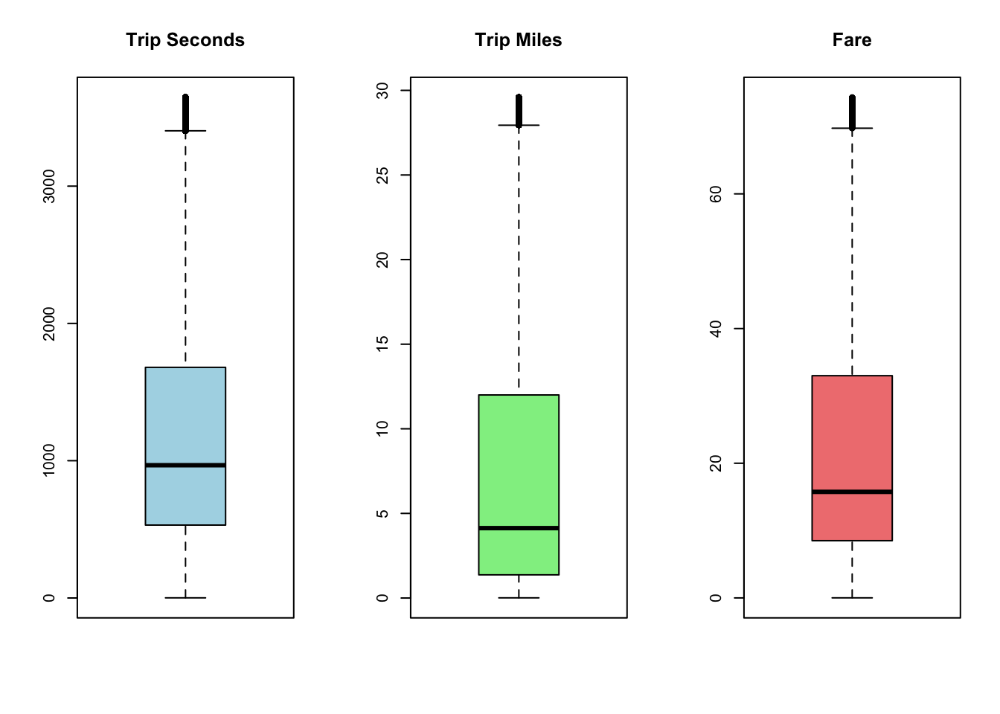

par(mfrow =c(1, 3))boxplot(df$trip_seconds, main ="Trip Seconds", col ="lightblue")boxplot(df$trip_miles, main ="Trip Miles", col ="lightgreen")boxplot(df$fare, main ="Fare", col ="lightcoral")
par(mfrow =c(1, 3))boxplot(df$trip_seconds, main ="Trip Seconds", col ="lightblue")boxplot(df$trip_miles, main ="Trip Miles", col ="lightgreen")boxplot(df$fare, main ="Fare", col ="lightcoral")
speed_proxy trip_miles trip_seconds fare
Min. : 0.01 Min. : 0.010 Min. : 1 Min. : 0.01
1st Qu.: 5.88 1st Qu.: 1.380 1st Qu.: 540 1st Qu.: 8.75
Median : 9.64 Median : 4.240 Median : 999 Median :16.25
Mean : 12.25 Mean : 7.091 Mean :1217 Mean :21.87
3rd Qu.: 15.89 3rd Qu.:12.200 3rd Qu.:1726 3rd Qu.:33.75
Max. :47490.28 Max. :30.080 Max. :3753 Max. :75.25
par(mfrow =c(1, 2))boxplot(df$speed_proxy, main ="Speed_proxy", col ="lightgray")boxplot(filter(df, trip_miles >0.5 )$speed_proxy, main ="Speed for miles>0.5", col ="lightgray")

boxplot(filter(df, remove_outliers(speed_proxy))$speed_proxy, main ="Speed cutted", col ="lightgray")par(mfrow =c(1, 1))
Reasonable to use remove_outliers for speed_proxy.
if(interactive()){# NOTE open in Viewer Pan summarytools::dfSummary(df) |> summarytools::view() } else { summarytools::dfSummary(df) |>print(method ="render")}
Data Frame Summary
df
Dimensions: 5507376 x 24
Duplicates: 2166
No
Variable
Stats / Values
Freqs (% of Valid)
Graph
Valid
Missing
1
trip_start_timestamp [POSIXct, POSIXt]
min : 2024-01-01
med : 2024-07-07 19:30:00
max : 2024-12-31 23:45:00
range : 11m 30d 23H 45M 0S
35131 distinct values
5507376 (100.0%)
0 (0.0%)
2
trip_end_timestamp [POSIXct, POSIXt]
min : 2024-01-01
med : 2024-07-07 19:45:00
max : 2025-01-01 00:45:00
range : 1y 0m 0d 0H 45M 0S
35135 distinct values
5507376 (100.0%)
0 (0.0%)
3
trip_seconds [numeric]
Mean (sd) : 1219.8 (849.8)
min ≤ med ≤ max:
1 ≤ 999 ≤ 3753
IQR (CV) : 1197 (0.7)
3753 distinct values
5507376 (100.0%)
0 (0.0%)
4
trip_miles [numeric]
Mean (sd) : 7 (6.5)
min ≤ med ≤ max:
0 ≤ 4.1 ≤ 30.1
IQR (CV) : 10.7 (0.9)
3008 distinct values
5507376 (100.0%)
0 (0.0%)
5
pickup_community_area [numeric]
Mean (sd) : 35.7 (26.2)
min ≤ med ≤ max:
1 ≤ 32 ≤ 77
IQR (CV) : 48 (0.7)
77 distinct values
5404775 (98.1%)
102601 (1.9%)
6
dropoff_community_area [numeric]
Mean (sd) : 25.5 (20.2)
min ≤ med ≤ max:
1 ≤ 28 ≤ 77
IQR (CV) : 24 (0.8)
77 distinct values
5026818 (91.3%)
480558 (8.7%)
7
fare [numeric]
Mean (sd) : 21.7 (15.2)
min ≤ med ≤ max:
0 ≤ 16 ≤ 75.2
IQR (CV) : 24.8 (0.7)
6245 distinct values
5507376 (100.0%)
0 (0.0%)
8
tips [numeric]
Mean (sd) : 2.9 (4)
min ≤ med ≤ max:
0 ≤ 1.2 ≤ 400
IQR (CV) : 4 (1.4)
2724 distinct values
5507376 (100.0%)
0 (0.0%)
9
tolls [numeric]
Mean (sd) : 0 (4.4)
min ≤ med ≤ max:
0 ≤ 0 ≤ 4444.4
IQR (CV) : 0 (190.5)
281 distinct values
5507376 (100.0%)
0 (0.0%)
10
extras [numeric]
Mean (sd) : 2 (9.3)
min ≤ med ≤ max:
0 ≤ 0 ≤ 5555
IQR (CV) : 3 (4.7)
2451 distinct values
5507376 (100.0%)
0 (0.0%)
11
trip_total [numeric]
Mean (sd) : 26.7 (23.1)
min ≤ med ≤ max:
0 ≤ 18.9 ≤ 8912.1
IQR (CV) : 29.8 (0.9)
10635 distinct values
5507376 (100.0%)
0 (0.0%)
12
payment_type [character]
1. Cash
2. Credit Card
3. Dispute
4. Mobile
5. No Charge
6. Prcard
7. Unknown
1429006
(
25.9%
)
2193764
(
39.8%
)
2101
(
0.0%
)
926432
(
16.8%
)
8636
(
0.2%
)
721032
(
13.1%
)
226405
(
4.1%
)
5507376 (100.0%)
0 (0.0%)
13
company [character]
1. Flash Cab
2. Taxi Affiliation Services
3. Sun Taxi
4. Taxicab Insurance Agency
5. City Service
6. Chicago Independents
7. 5 Star Taxi
8. Blue Ribbon Taxi Associat
9. Globe Taxi
10. Medallion Leasin
[ 33 others ]
1178157
(
21.4%
)
840136
(
15.3%
)
650624
(
11.8%
)
644879
(
11.7%
)
553323
(
10.0%
)
336262
(
6.1%
)
252505
(
4.6%
)
223483
(
4.1%
)
208198
(
3.8%
)
164310
(
3.0%
)
455499
(
8.3%
)
5507376 (100.0%)
0 (0.0%)
14
pickup_centroid_latitude [numeric]
Mean (sd) : 41.9 (0.1)
min ≤ med ≤ max:
41.7 ≤ 41.9 ≤ 42
IQR (CV) : 0.1 (0)
488 distinct values
5405565 (98.2%)
101811 (1.8%)
15
pickup_centroid_longitude [numeric]
Mean (sd) : -87.7 (0.1)
min ≤ med ≤ max:
-87.9 ≤ -87.6 ≤ -87.5
IQR (CV) : 0.1 (0)
488 distinct values
5405565 (98.2%)
101811 (1.8%)
16
dropoff_centroid_latitude [numeric]
Mean (sd) : 41.9 (0.1)
min ≤ med ≤ max:
41.7 ≤ 41.9 ≤ 42
IQR (CV) : 0 (0)
598 distinct values
5061153 (91.9%)
446223 (8.1%)
17
dropoff_centroid_longitude [numeric]
Mean (sd) : -87.7 (0.1)
min ≤ med ≤ max:
-87.9 ≤ -87.6 ≤ -87.5
IQR (CV) : 0 (0)
598 distinct values
5061153 (91.9%)
446223 (8.1%)
18
pickup_census_tract [numeric]
Mean (sd) : 17031491492 (370745.1)
min ≤ med ≤ max:
17031010100 ≤ 17031320100 ≤ 17031980100
IQR (CV) : 898400 (0)
439 distinct values
2383787 (43.3%)
3123589 (56.7%)
19
dropoff_census_tract [numeric]
Mean (sd) : 17031400248 (335620.1)
min ≤ med ≤ max:
17031010100 ≤ 17031320100 ≤ 17031980100
IQR (CV) : 756700 (0)
725 distinct values
2319085 (42.1%)
3188291 (57.9%)
20
speed_proxy [numeric]
Mean (sd) : 11.2 (6.7)
min ≤ med ≤ max:
0 ≤ 9.5 ≤ 30.9
IQR (CV) : 9.8 (0.6)
1330323 distinct values
5507376 (100.0%)
0 (0.0%)
21
change_ca_flag [character]
1. changed
2. single-area
3. unavailable
4182697
(
75.9%
)
810480
(
14.7%
)
514199
(
9.3%
)
5507376 (100.0%)
0 (0.0%)
22
hour [integer]
Mean (sd) : 13.8 (5.1)
min ≤ med ≤ max:
0 ≤ 14 ≤ 23
IQR (CV) : 8 (0.4)
24 distinct values
5507376 (100.0%)
0 (0.0%)
23
day_part [ordered, factor]
1. night
2. morning
3. midday
4. evening
259154
(
4.7%
)
1555222
(
28.2%
)
2230286
(
40.5%
)
1462714
(
26.6%
)
5507376 (100.0%)
0 (0.0%)
24
weekday [ordered, factor]
1. Mon
2. Tue
3. Wed
4. Thu
5. Fri
6. Sat
7. Sun
810073
(
14.7%
)
868595
(
15.8%
)
881901
(
16.0%
)
900590
(
16.4%
)
832485
(
15.1%
)
620381
(
11.3%
)
593351
(
10.8%
)
5507376 (100.0%)
0 (0.0%)
Generated by summarytools 1.0.1 (R version 4.4.1) 2025-05-15
Source Code
---title: "NN_for_taxi_fare_Chicago"author: "Group B2"format: html: code-link: true code-tools: true toc: true toc-location: right df-print: paged revealjs: output-ext: "Group-B2-PRESENTATION.html" toc: false code-line-numbers: false echo: true scrollable: true code-link: true code-tools: true df-print: paged slide-number: trueexecute: cache: false warning: false---## Data preparation ```{r}library(httr)library(jsonlite)library(dplyr)library(tidyr)library(lubridate)library(ggplot2)library(readr)```## aquire dataset using json```{r}need_to_parse =FALSEif (need_to_parse) { base_url <-"https://data.cityofchicago.org/resource/ajtu-isnz.json" limit <-49000 offset <-0 chunk_list <-list() finished <-FALSE where_clause <-URLencode("trip_start_timestamp >= '2024-01-01T00:00:00' AND trip_start_timestamp < '2025-01-01T00:00:00'", reserved =TRUE) cols_to_drop <-c("trip_id", "taxi_id","pickup_centroid_location", "dropoff_centroid_location" ) clean_chunk <-function(df) { df <- df %>%select(-any_of(cols_to_drop)) %>%mutate(trip_seconds =as.numeric(trip_seconds),trip_miles =as.numeric(trip_miles),fare =as.numeric(fare),tips =as.numeric(tips),tolls =as.numeric(tolls),extras =as.numeric(extras),trip_total =as.numeric(trip_total),pickup_community_area =as.integer(pickup_community_area),dropoff_community_area =as.integer(dropoff_community_area),trip_start_timestamp =ymd_hms(trip_start_timestamp),trip_end_timestamp =ymd_hms(trip_end_timestamp) )return(df) }while (!finished) { raw_url <-paste0( base_url,"?$where=", where_clause,"&$limit=", limit,"&$offset=", offset ) url <-URLencode(raw_url) resp <-GET(url)if (status_code(resp) !=200) {stop("Warning: ", status_code(resp)) } data_chunk <-fromJSON(rawToChar(resp$content))if (length(data_chunk) ==0) { finished <-TRUEcat("---Completed---\n")break } clean_data <-clean_chunk(data_chunk) chunk_list[[length(chunk_list) +1]] <- clean_datacat("Rows acquired: ", offset +nrow(clean_data), "\n") offset <- offset + limit }}``````{r}need_to_save =FALSEif (need_to_save) { taxi_data_2024 <-bind_rows(chunk_list)write.csv(taxi_data_2024, "chicago_taxi_2024.csv", row.names =FALSE)}```## read saved dataset```{r}taxi_data_half2024 <- readr::read_csv("chicago_taxi_half2024.csv")```## explore dataset```{r}taxi_data_half2024 %>%head()``````{r}numeric_columns <-c("trip_start_timestamp","trip_end_timestamp","trip_seconds","trip_miles","fare","tips","tolls","extras","trip_total","pickup_community_area","dropoff_community_area")taxi_data_half2024 %>%select(all_of(numeric_columns)) %>%summary()```## Filter zero values```{r}df <- taxi_data_half2024 %>%drop_na(trip_seconds, trip_miles, fare) %>%filter(trip_seconds >0, trip_miles >0, fare >0)``````{r}par(mfrow =c(1, 3))boxplot(df$trip_seconds, main ="Trip Seconds", col ="lightblue")boxplot(df$trip_miles, main ="Trip Miles", col ="lightgreen")boxplot(df$fare, main ="Fare", col ="lightcoral")par(mfrow =c(1, 1))``````{r}remove_outliers <-function(x) { Q1 <-quantile(x, 0.25, na.rm =TRUE) Q3 <-quantile(x, 0.75, na.rm =TRUE) IQR_val <- Q3 - Q1 lower <- Q1 -1.5* IQR_val upper <- Q3 +1.5* IQR_valreturn(x >= lower & x <= upper)}df <- df %>%filter(remove_outliers(trip_seconds),remove_outliers(trip_miles),remove_outliers(fare) )``````{r}par(mfrow =c(1, 3))boxplot(df$trip_seconds, main ="Trip Seconds", col ="lightblue")boxplot(df$trip_miles, main ="Trip Miles", col ="lightgreen")boxplot(df$fare, main ="Fare", col ="lightcoral")par(mfrow =c(1, 1))```## Create Proxy metrics### [proxy] Average Speed```{r}df <- df %>%mutate(speed_proxy = (trip_miles /1.60934) / (trip_seconds/60/60))df %>%select(speed_proxy, trip_miles, trip_seconds, fare) %>%summary()``````{r}par(mfrow =c(1, 2))boxplot(df$speed_proxy, main ="Speed_proxy", col ="lightgray")boxplot(filter(df, trip_miles >0.5 )$speed_proxy, main ="Speed for miles>0.5", col ="lightgray")boxplot(filter(df, remove_outliers(speed_proxy))$speed_proxy, main ="Speed cutted", col ="lightgray")par(mfrow =c(1, 1))```Reasonable to use remove_outliers for speed_proxy.```{r}df <- df %>%filter(remove_outliers(speed_proxy))nrow(df)```### [proxy] Change community area flag - "unavaliable" if one of values is NA (i.e. we cannot define if the area was changed during trip)- "changed" if the community area of destination differs to the community area of strarting position- "single-area" if not differs```{r}df <- df %>%mutate(change_ca_flag =case_when(is.na(pickup_community_area) ~"unavailable",is.na(dropoff_community_area) ~"unavailable", pickup_community_area == dropoff_community_area ~"single-area", pickup_community_area != dropoff_community_area ~"changed" ) ) df %>%select(change_ca_flag) %>%table() %>%pie()```### Day part & weekday```{r}df <- df %>%mutate(hour =hour(trip_start_timestamp),day_part =case_when( hour >=0& hour <6~"night", hour >=6& hour <12~"morning", hour >=12& hour <18~"midday", hour >=18& hour <=23~"evening" ),day_part =factor( day_part,levels =c("night", "morning", "midday", "evening"),ordered =TRUE ),weekday =case_when(wday(trip_start_timestamp, week_start =1) ==1~"Mon",wday(trip_start_timestamp, week_start =1) ==2~"Tue",wday(trip_start_timestamp, week_start =1) ==3~"Wed",wday(trip_start_timestamp, week_start =1) ==4~"Thu",wday(trip_start_timestamp, week_start =1) ==5~"Fri",wday(trip_start_timestamp, week_start =1) ==6~"Sat",wday(trip_start_timestamp, week_start =1) ==7~"Sun" ),weekday =factor( weekday,levels =c("Mon", "Tue", "Wed", "Thu", "Fri", "Sat", "Sun"),ordered =TRUE ) ) #par(mfrow = c(3, 1))df %>%select(hour) %>%table() %>%barplot()df %>%select(day_part) %>%table() %>%barplot()df %>%select(weekday) %>%table() %>%barplot()#par(mfrow = c(1, 1))```## Data summary```{r}if(interactive()){# NOTE open in Viewer Pan summarytools::dfSummary(df) |> summarytools::view() } else { summarytools::dfSummary(df) |>print(method ="render")}```

![](data:image/png;base64,%20iVBORw0KGgoAAAANSUhEUgAAAJgAAABuCAQAAABxABKuAAAAAmJLR0QA/4ePzL8AAAAHdElNRQfpBQ8PKDr9EU/pAAACJklEQVR42u2c21HDMBQFbSY9pgeox/RAlfABYZSHIq+sl53dnwwzJMQr3aMrBWf+noTw1vsN7A2FQRQGOYU/zL3fTUOW//D+SF52mPOn1C8fl/M0TdP0BZ9lSUIGmGGkOPozgLDc4lhD+cEYQlhNSg+GGQZRGKRZSS5BM7OHcI/RMMPOf481wn07a5eHg4X+llVx3fLQRdjlsuhFrdFRr0X5pYuw/IuKPXNJHuuV6sgOU5KpQSiVoMWE5Yzg7bzILdWWFJxh12Ockzf5BUfY9moVS7Jk/I7zWg0yrOz86E0DYfkjukV1rWEafJVMpVr7fqyCsBYleNHRvtwrCKvda9//rZb7U493IJkzrO45/MjrakJYXEzNwhv5ICg5w1om0h4wwyCbV8mR86YGm4WNnDc1sCQhg2+NWsBCBQo7YmKxPgDPsFdvM8wwiBl2x/OjI4Xd8Tx0LEnI6hl2xPUxh9XCXn11vGBJQhQGURhEYRCFQSKrpE1EjGhbYRvxGEsSojCIwiAKgygMojCIwiAKgygMojCIwiAKgygMojCIwiAKgygMojCIwiAKgygMojCIwiAKgygMojCIwiAKgygMojCIwiDeCRIl+KfC4CYahUV5fK+xJQlRGERhEIVBFAZRGERhEIVBFAa56vS9wyjNzdbo1b56iGNJQhQGURhEYRCFQRQGURhEYRCFQRQGURhkDvfbn26+H/IefC4564hhSUIUBlEY5Ad74WL2C/Fy5wAAAD10RVh0aWNjOmNvcHlyaWdodABDb3B5cmlnaHQgMjAwNyBBcHBsZSBJbmMuLCBhbGwgcmlnaHRzIHJlc2VydmVkLp5m3CkAAAAjdEVYdGljYzpkZXNjcmlwdGlvbgBHZW5lcmljIFJHQiBQcm9maWxlGqc4jgAAAABJRU5ErkJggg==)
![](data:image/png;base64,%20iVBORw0KGgoAAAANSUhEUgAAAJgAAABuCAQAAABxABKuAAAAAmJLR0QA/4ePzL8AAAAHdElNRQfpBQ8PKQbLZQIvAAACKklEQVR42u2cUVLDIBgGE6d37B30PPEOnlIftA5tSmEJEJruvjjO2FgW/o+f1Dh/T0J42/sNPBsKgygMcgq/mfd+Nx1Z/sP7IznsMOdPqR8+LudpmqbpC77KkoQMsMJIcezPAMJKiyOH+pMxhLCW1J4MMwyiMEi3klyCZuYZwj1Gxww7/31tEe7byd0eDhb6W3bFvO1hF2GXYdFB5eho16L8souw8kHFXrkkb+vV6sh2Lcn0MPNJTUKtBK0mrGQGbwdZWqo9qbjCrodfQ+C0ulYNtl2tYUnWjN9xrtUhw+quj73pIKx8RreobjVNgzeuqVTr3481ENajBC86+pd7A2Gte+317+p5PvX2DqRwhbW9Dz/yvpoQFhfTsvBGvhGUXGE9E+kZMMMgm3fJkfOmBZuFjZw3LbAkIYMfjXrAQgUKO2JisT4Ar7BXbzPMMIgZtuLxrSOFrXgcOpYkJHuFHXF/LCFb2KvvjhcsSYjCIAqDKAyiMEhkl7SJiBFtK2wj7mNJQhQGURhEYRCFQRQGURhEYRCFQRQGURhEYRCFQRQGURhEYRCFQRQGURhEYRCFQRQGURhEYRCFQRQGURhEYRCFQRQGURjEJ0GiBH9UGDxEo7Ao9581tiQhCoMoDKIwiMIgCoMoDKIwiMIgV52+TxiluTkavdq/HuJYkhCFQRQGURhEYRCFQRQGURhEYRCFQRQGmcPz9qeH77u8B59LzjpiWJIQhUEUBvkBjmJi9ig231UAAAA9dEVYdGljYzpjb3B5cmlnaHQAQ29weXJpZ2h0IDIwMDcgQXBwbGUgSW5jLiwgYWxsIHJpZ2h0cyByZXNlcnZlZC6eZtwpAAAAI3RFWHRpY2M6ZGVzY3JpcHRpb24AR2VuZXJpYyBSR0IgUHJvZmlsZRqnOI4AAAAASUVORK5CYII=)


![](data:image/png;base64,%20iVBORw0KGgoAAAANSUhEUgAAAJgAAABuCAQAAABxABKuAAAAAmJLR0QA/4ePzL8AAAAHdElNRQfpBQ8PKTFz2KcgAAACJUlEQVR42u2cS1LDMBAFZSp3zB3gPOEOnBI2CAtsh7Tjj0bq3lAskiJd8zQjWWH4TEJ4OfsPiIbCIAqDXMpfBvTS28/y98ZeGI5ynb+sfpeU0jWllNLH2Z/nUIwkRGEQhUEUBlEYRGEQhUGemsMy/YywGwm7fv/sYYQ1khCFQRQGURhEYRCFQRQGURhEYRA86d86f5C5YmvU00ZoipGEKAyiMIjCIAqDKAyiMIjCIAqDbPIQZCRvnNp9erSxsPYvQBlJiMIgCoMoDKIwiMIgCoMoDKIwiMIgCoMoDKIwiMIgCoMoDKIwyMYnrpl2j6p3EtbuUbWRhCgMojCIwiAKgygMstNYsUR5BzvmjPawsHXXzaff1R3vYMccbkGFrRlGp3qm7xfrC9CHRXJZd6x7/wevYfeJENKqhEXYgTpWQKqqsEzNbaBKYTW3ASMJqbLCRurrm5ULq69vGklI5RWWqadvBhFWT980khCFQYJEcuTsQSOcsLMHDSMJCVdhmbMGjbDCzho0jCQkbIWNHNs3GxB2bN9sQFjmmDbQkLBj2sA/wmL+e7U9V7VfwuZuPtRzTvA4e65qfyosop5l9qi0htawKXtUWtPCMlv2z0VhMZf7eba8YrUo7OxjlH14/lN1Eckp60PaqbD1Ie1U2Ai9B9m9sMyjNaewCfcbg8IWKQarotYUtsj8NtEjaojCIEO5A3pvaDu0Ja/FGjboiGEkIQqDKAzyBY+bYah4mANrAAAAPXRFWHRpY2M6Y29weXJpZ2h0AENvcHlyaWdodCAyMDA3IEFwcGxlIEluYy4sIGFsbCByaWdodHMgcmVzZXJ2ZWQunmbcKQAAACN0RVh0aWNjOmRlc2NyaXB0aW9uAEdlbmVyaWMgUkdCIFByb2ZpbGUapziOAAAAAElFTkSuQmCC)